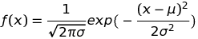
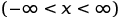

テストの得点と偏差値の関係
視覚的に理解する
平均点 μ :
標準偏差 σ :
知識
偏差値30 = -2σ
偏差値40 = -σ
偏差値50 = 平均点
偏差値60 = σ
偏差値70 = 2σ
-σ から σ の範囲に、約68%の人数が含まれる。
-2σ から 2σ の範囲に、約95%の人数が含まれる。
参考情報
偏差値を算出する式
偏差値 ＝ ( 得点 － 平均点 ) ÷ 標準偏差 × 10 ＋ 50
正規分布曲線の式
 
μ：平均、σ：標準偏差